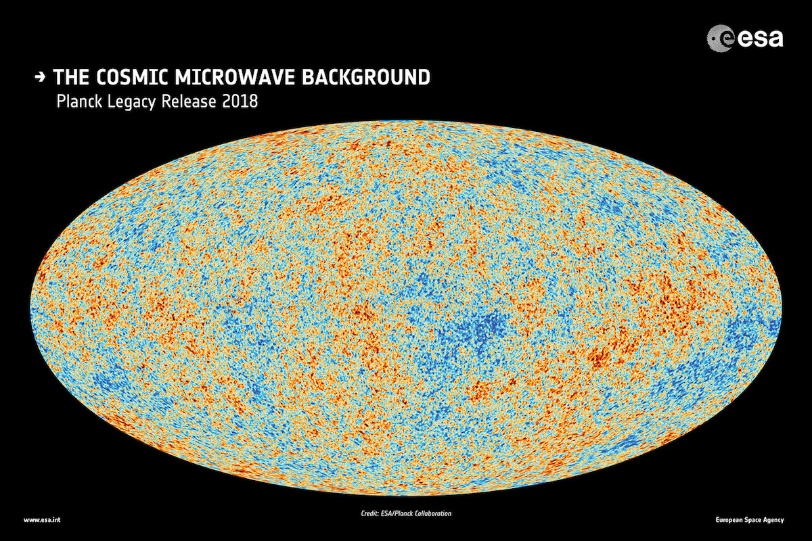
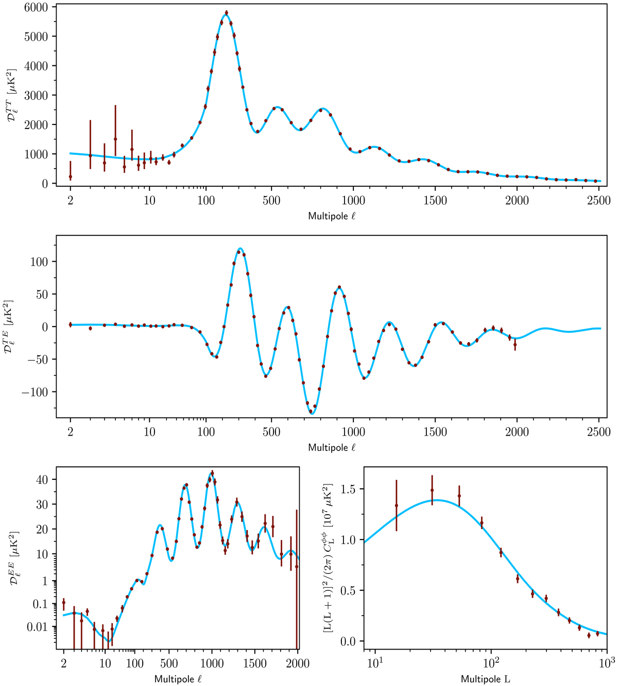

01 - CMB 是什么，为什么要学，要学什么¶
主维度：全局（跨所有维度） 关键关系： - 角功率谱 (方法) --用于--> 参数提取 (方法)：角功率谱用于从 CMB 数据中提取宇宙学参数 - Planck (实验) --用于--> 角功率谱 (方法)：Planck 卫星用于测量 CMB 角功率谱 - 声波振荡 (概念) --用于--> 角功率谱 (方法)：声波振荡用于解释角功率谱峰的结构
参考：Wikipedia - CMB · Wayne Hu 入门教程 · Dodelson《Modern Cosmology》
CMB 到底是什么¶
宇宙大爆炸之后，早期宇宙非常热、非常密。所有物质都是高温等离子体——电子、质子、光子混在一起，光子不断被自由电子弹来弹去（散射），根本走不远。整个宇宙就像一团浓雾，不透明。
随着宇宙膨胀，温度逐渐下降。到大爆炸后大约 38 万年，温度降到约 3000K，电子终于被质子"抓住"形成了氢原子。自由电子突然消失了，光子再也没什么东西可以撞了，于是这些光子就自由飞行了。
这些光子从 38 万年前飞到今天，整整飞了 138 亿年。因为宇宙一直在膨胀，它们的波长被不断拉长（红移），从可见光红移到了微波波段，温度从 3000K 降到了 2.725K。
CMB（Cosmic Microwave Background，宇宙微波背景辐射）就是这些光子。 它是宇宙在 38 万岁时的一张"全景照片"。
延伸阅读：Wikipedia - Cosmic microwave background | Wayne Hu 的 CMB 入门教程
下面这张图就是 Planck 卫星拍到的 CMB 全天图：

红色区域比平均温度略热，蓝色区域略冷。温差非常非常小——只有约 ±0.0002K（平均温度 2.725K 的十万分之一）。
为什么 CMB 重要¶
CMB 是我们能看到的"最古老的光"。它重要在于：
-
它证实了大爆炸理论。如果宇宙起源于一个高温高密状态，就必然会留下这样的热辐射余晖。1965 年 Penzias 和 Wilson 意外发现了它，拿了诺贝尔奖。（发现 CMB 的故事）
-
它编码了早期宇宙的物理信息。那些微小的温度涨落不是噪声，它们反映了 38 万年前宇宙中物质密度的微小不均匀——这些不均匀后来在引力作用下长大，变成了今天的星系、星系团。
-
通过分析 CMB 的涨落模式，可以精确测量宇宙的基本参数：宇宙的年龄、几何形状（平坦/弯曲）、暗物质含量、暗能量含量、重子密度等。这就是为什么 CMB 被称为"精密宇宙学"的基石。
下面这张功率谱图就是从 CMB 中提取出的核心信息：

最上面一幅（TT）：横轴可以理解为"角度大小"（越往右 = 越小的角度），纵轴是对应角度上温度涨落的强度。那些峰就是关键——它们的位置和高度直接告诉我们宇宙的成分和几何。现在不需要看懂这张图，后面学了声波振荡之后会回来解读。
知识维度¶
在深入之前，先把这个领域的知识坐标轴理清楚：
| 维度 | 含义 | 核心问题 |
|---|---|---|
| D1 物理原理 | 膨胀宇宙、热历史、复合退耦、微扰论、声波振荡 | 宇宙怎么演化？CMB 怎么产生？涨落从哪来？ |
| D2 观测量与分析 | 角功率谱 \(C_\ell\)、偏振、参数提取 | 我们测什么？怎么从观测反推物理？ |
| D3 实验技术 | Planck/ACT/SPT/BICEP、前景分离 | 哪些望远镜在做什么？系统误差怎么控制？ |
| D4 前沿与开放问题 | B-mode、频谱畸变、CMB 异常等 | 还有什么没搞定？ |
D1 和 D2 的区别：D1 回答"物理上发生了什么"（如声波振荡的机制），D2 回答"怎么从数据里看出来"（如功率谱峰的位置编码了什么参数）。D3 独立出来是因为 CMB 是高度实验驱动的领域。
学 CMB 需要学哪些东西¶
从你的本科物理出发，到理解 CMB 的核心物理，需要补充以下知识（按顺序）：
| 步骤 | 要学的概念 | 维度 | 一句话说为什么需要 | 参考 |
|---|---|---|---|---|
| 1 | 膨胀宇宙 + Friedmann 方程 | D1 | 没有膨胀框架，"红移""尺度因子"都没法谈 | Wikipedia · Dodelson Ch.1 |
| 2 | 宇宙热历史 | D1 | 理解宇宙从热到冷经历了什么，各种粒子什么时候退耦 | Wikipedia · Kolb & Turner Ch.3 |
| 3 | 复合与退耦 | D1 | 直接回答"CMB 为什么存在"——为什么 38 万年这个时间点 | Wikipedia · Wayne Hu 教程 |
| 4 | 扰动与声波振荡 | D1 | CMB 物理的核心——温度涨落的模式从哪来 | Wayne Hu - acoustic oscillations · Dodelson Ch.8 |
| 5 | 角功率谱 \(C_\ell\) | D1+D2 | 把物理过程翻译成可观测量，理解功率谱图 | Wayne Hu - power spectrum · Planck 2018 results I |
前置知识你基本够用（力学里的能量守恒、热统里的黑体辐射和平衡态、电磁里的波）。广义相对论不需要完整学过，只需要接受几个结论。
CMB 研究的前沿方向¶
上面 5 步是"经典 CMB 物理"，已经是教科书共识（Level 1）。但 CMB 领域远没有结束，以下是当前最活跃的前沿方向：
一、B-mode 偏振测量（引力波探测）¶
CMB 光子不仅有温度涨落，还有偏振。偏振可以分解为两种模式： - E-mode：已被精确测量（功率谱图中间那幅 TE、下面 EE），来源是标量扰动（密度涨落） - B-mode：尚未确定探测到原初信号。如果暴胀（inflation）产生了原初引力波，它们会在 CMB 上留下独特的 B-mode 偏振图样
B-mode 是当前 CMB 领域最大的实验目标之一。关键参数是张量-标量比 \(r\)，它衡量原初引力波的强度。当前上限约 \(r < 0.036\)（BICEP/Keck）。
主要实验： - BICEP/Keck（南极地面，持续运行，最新数据到 2018 观测季） - Simons Observatory（智利，已开始运行） - LiteBIRD（日本主导的卫星计划，预计 2030s 发射，目标 \(\sigma(r) \sim 0.001\)） - CMB-S4（下一代地面旗舰实验）
难点：银河系前景（尘埃和同步辐射）也会产生 B-mode 信号，必须精确分离。此外引力透镜会把 E-mode 转化为 B-mode（lensing B-mode），这是一个需要"减掉"的已知信号。
可靠程度：B-mode 的理论预测是 Level 1（广义相对论的标准推论），但原初引力波是否存在、\(r\) 的值是多少，仍是 Level 4（未知）。
参考：BICEP/Keck 最新结果 · LiteBIRD 概述 · CMB-S4 科学白皮书 · Wikipedia - B-mode
二、小尺度 CMB 测量¶
Planck 卫星的角分辨率约 5 弧分（\(\ell \lesssim 2500\)）。地面望远镜可以推到更小尺度（\(\ell > 3000\)），探测 Planck 看不到的物理：
主要实验： - ACT（Atacama Cosmology Telescope，智利，已完成观测，DR6 数据公开） - SPT（South Pole Telescope，南极，SPT-3G 正在运行）
科学目标： - 更精确的 CMB 透镜测量（小尺度受引力透镜影响更强） - 检验 \(\Lambda\)CDM 标准模型的细微偏差（如有效中微子数 \(N_{\text{eff}}\)、原初功率谱的振荡特征） - 通过 SZ 效应（见下文）探测星系团
可靠程度：小尺度数据本身是 Level 1 观测事实，但从中提取的某些宇宙学限制（如 \(H_0\) 张力的解释）涉及 Level 3-4。
三、SZ 效应（Sunyaev-Zel'dovich 效应）¶
CMB 光子在穿越星系团时，会被团中的高温电子散射，改变能谱。这叫 SZ 效应，分两种：
- 热 SZ（tSZ）：电子热运动的散射，改变光子频谱（低频减少、高频增加），和电子温度/压力有关
- 动力学 SZ（kSZ）：星系团整体运动产生的多普勒效应，和星系团的速度有关
SZ 效应的功率和红移无关（这一点很特别），所以可以用来找高红移星系团、测大尺度结构的速度场。
可靠程度：SZ 效应的理论是 Level 1。用它做精密宇宙学限制是 Level 2-3。
四、CMB 引力透镜（Lensing）¶
CMB 光子从退耦面飞到我们之间，路径会被沿途的大尺度结构（暗物质）弯折——和光学中的透镜类似。这使得 CMB 温度和偏振图样被轻微扭曲。
通过统计分析这种扭曲，可以重建出一张"透镜势"图——本质上就是从 CMB 退耦到今天之间所有物质的投影分布。这是一种独立测量大尺度结构增长的方式。
最新结果（ACT + SPT + Planck 联合分析）给出了对宇宙结构增长率 \(S_8\) 的精确限制。
可靠程度：透镜效应的理论是 Level 1。重建方法中的前景污染（tSZ、CIB）去除是当前活跃的方法学问题（Level 3）。
参考：CMB lensing 综述 - Lewis & Challinor · ACT+SPT+Planck 联合 lensing · Wikipedia - CMB lensing
五、CMB 频谱畸变（Spectral Distortion）¶
COBE/FIRAS 在 1990 年代证实 CMB 是极其精确的黑体辐射。但理论预测，早期宇宙中的能量注入过程（如小尺度扰动的耗散、暗物质湮灭）应该产生微小的频谱偏离黑体的畸变：
- \(\mu\)-畸变：很早期的能量注入（\(z > 5 \times 10^4\)），Bose-Einstein 型偏离
- \(y\)-畸变：较晚期的能量注入（\(z < 5 \times 10^4\)），Compton 散射不完全热化
这些畸变量级极小（\(\mu \sim 10^{-8}\), \(y \sim 10^{-6}\)），FIRAS 没有灵敏度探测到。
未来实验： - PIXIE（NASA Explorer 级任务概念，灵敏度比 FIRAS 高 ~1000 倍） - SPECTER（新提出的概念，预计可以 5-10\(\sigma\) 探测到 \(\Lambda\)CDM 预测的 \(\mu\)-畸变）
可靠程度：\(\Lambda\)CDM 标准模型预测存在频谱畸变是 Level 1。具体数值和是否有非标准贡献是 Level 4。
六、CMB 异常（Anomalies）¶
Planck 数据中存在一些统计上"有点奇怪"但尚无定论的特征：
- 大尺度功率不足（低 \(\ell\) 的 \(C_\ell\) 偏低）
- 半球不对称性（一半天空的涨落比另一半大）
- Cold Spot（一个异常大的冷斑）
这些是统计涨落还是新物理的信号？目前没有共识。
可靠程度：Level 4（争议中）。
前沿方向总结¶
| 方向 | 核心问题 | 关键实验 | 可靠程度 |
|---|---|---|---|
| B-mode 偏振 | 原初引力波存在吗？\(r = ?\) | BICEP, Simons Obs, LiteBIRD, CMB-S4 | 理论 L1，\(r\) 的值 L4 |
| 小尺度测量 | 标准模型对不对？有没有新粒子？ | ACT, SPT-3G | 数据 L1，解释 L3-4 |
| SZ 效应 | 星系团如何分布和运动？ | ACT, SPT, Simons Obs | 理论 L1，应用 L2-3 |
| 引力透镜 | 大尺度结构如何增长？ | ACT+SPT+Planck 联合 | 理论 L1，方法 L3 |
| 频谱畸变 | 早期宇宙有哪些能量注入？ | PIXIE, SPECTER（未来） | 预测 L1，探测未实现 |
| CMB 异常 | 统计涨落还是新物理？ | Planck 数据再分析 | L4 |
学习建议¶
- 步骤 1-5 对应经典 CMB 物理（notes 文件 02-06），先建立基础
- 前沿方向可以在基础建立之后选择性深入
- 每个步骤对应一个 notes 文件（02、03、04……）
- 每个文件末尾有检测问题，你在文件里回答
- 如果某个步骤你觉得太简单或已经懂了，告诉我跳过
理解检测¶
看完上面的内容后，回答以下问题：
Q1：用你自己的话说一下，CMB 是怎么产生的？（不需要精确，就说你的理解）
你的回答：
Q2：CMB 的温度涨落（那张全天图上的红蓝斑点）大概有多大？这些涨落为什么重要？
你的回答：
Q3：上面列出了 5 个学习步骤，你觉得哪个你最好奇、最想先搞懂？
你的回答：